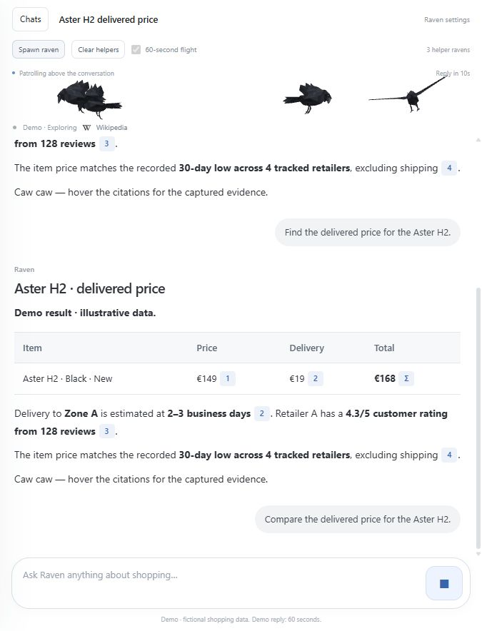

Raven UI assets
Accepted design export · full-page v42 and extension layout v40
Open the full-page chat →
Conversation sidebar, search-style composer, direct upward takeoff, and independent helper ravens. Use Spawn raven and 60-second flight above the chat.

Open the extension layout →
The compact design intended to sit beside a browser tab. Includes Markdown, captured evidence cards, website activity, mouse tracking, and the same approved model.
Integration status
Both pages are working local prototypes. They use fictional shopping responses and demo browsing activity. Helpers represent visual subagents; no real agent creation or cancellation is connected.
Repository documentation: docs/agents/raven-assets.md, raven-integration.md, and raven-authoring.md. The package includes editable Blender scenes and a verified JSON/BIN asset manifest. Preserve versioned filenames and relative paths.